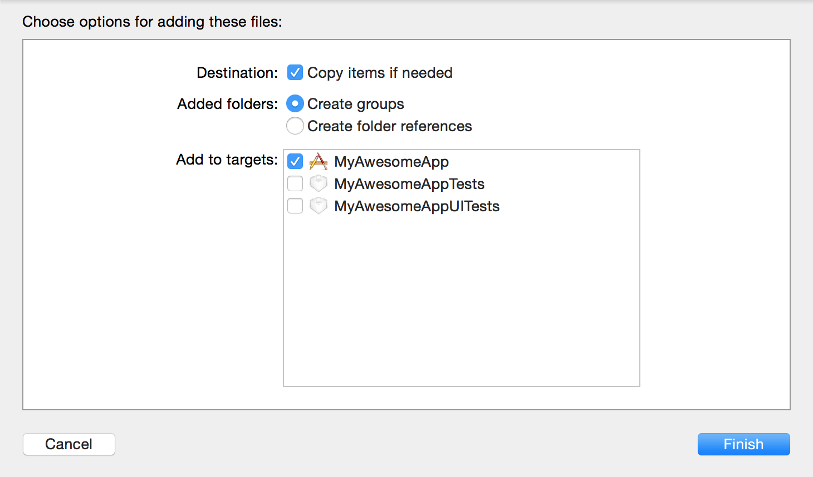

Integrating your iOS Deep Linking SDK
Installation
- Download the latest SDK as zip file and unzip.
Add the ShortcutDeepLinkingSDK.framework file to your project, e.g. by dragging it into the Project Navigator of your project in Xcode. Make sure to check Copy items if needed and Create groups in the import dialog.
Within your project's Build phases make sure that the ShortcutDeepLinkingSDK.framework is added in the Link binary with libraries section. If you don't find it there, drag it from the Project Navigator to the list.
Integration Into Your App
Enabling deferred deep linking
Step 1: In your AppDelegate.m file you have to import the SDK.
#import<ShortcutDeepLinkingSDK/ShortcutDeepLinkingSDK.h>Step 2: Then you have to tell the SDK about the app launch.
Add the following to -application:didFinishLaunchingWithOptions.
[[SCDeepLinking sharedInstance] launch];Collecting deep link interaction statistics
Step 1: You have to tell the SDK when a deep link is opened.
Add the following to -application:openURL:sourceApplication:annotation: (you have added this method to your app delegate when you implemented your app's normal deep link handling).
SCSession *deepLinkSession = [[SCDeepLinking sharedInstance] startSessionWithURL:url];
url = deepLinkSession.url;Step 2 (optional): You can tell the SDK when a user is done with looking at the deep link content; this allows to collect content session duration statistics.
To do so you have to call -finish on the deep link session object that you obtained in the previous step when the user is done looking at the deep link content.
[deepLinkSession finish];Typically you present a new view controller when a user opens a deep link. You now have to create a new property on this view controller holding the deep link session object. This way you can call -finish on it when the user is done looking at the content (e.g. when dismissing the view controller or navigating away from it).